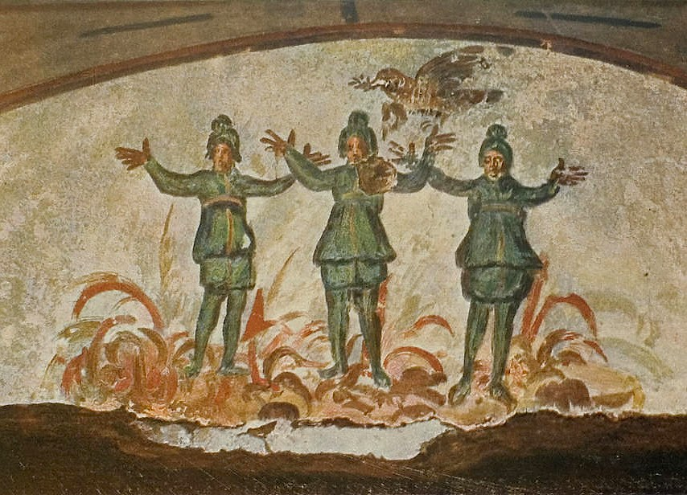

Early Christian depiction of the three youths in the fiery furnace, Catacombs of Rome.
Lesson 9 introduced the imperative (direct commands), the infinitive (verbal noun / maṣdar), and the l- + infinitive construction for expressing purpose, ability, desire, and obligation. Before proceeding, confirm you can recall the following:
Warm-Up Drill: Five Quick Questions
Answer in Syriac (Estrangela + transliteration).
| # | Question | Expected answer | Syriac |
|---|---|---|---|
| 1 | Give the Peal imperative m.sg. of ʾ-z-l (go). | ʾezal — go! | ܐܙܠ |
| 2 | How do you say “Do not kill!” (m.pl.)? | lā teqṭlūn | ܠܐ ܬܩܛܠܘܢ |
| 3 | What is the Peal infinitive of q-ṭ-l (kill)? | meqṭal | ܡܩܛܠ |
| 4 | Translate: šarrī l-mešmaʿ. | He began to hear. | ܫܪܝ ܠܡܫܡܥ |
| 5 | What does pūqdānā mean? | commandment, command (noun from p-q-d) | ܦܘܩܕܢܐ |
2.1 The Principle of Passive Formation in Syriac
In Syriac, the passive voice is not expressed by auxiliary verbs (as in English: “is killed”, “was written”) but by a separate, inflected stem built from the active stem by means of a characteristic prefix: ʾet- (or ʾett-). These are called the Et-stems. Each active stem has a corresponding Et-stem that functions as its passive or reflexive counterpart.
Students of Hebrew will recognise an analogy with the Niphal (נִפְעַל, passive of Qal) and Hitpael (הִתְפַּעֵל, reflexive of Piel). Arabists will recognise the parallel with Forms V, VII, and VIII: the tāʾ-prefixed (تَفَعَّلَ tafaʿʿala) and tāʾ-infixed (اِفْتَعَلَ iftaʿala) or n-prefixed (اِنْفَعَلَ infaʿala) passives/reflexives, which in Syriac have largely replaced the older internal vowel passives (like Arabic fuʿila or Hebrew Puʿal and Hophal).
2.2 The Three Et-Stems
| Et-Stem Name | Active Counterpart | Prefix | Meaning / Function |
|---|---|---|---|
| Ethpeel ܐܬܦܥܠ | Peal | ʾet- | Passive or reflexive of Peal: “to be killed”, “to be written” |
| Etpaael ܐܬܦܥܠ | Paael | ʾet- + R2 doubled | Passive or reflexive of Paael: “to be blessed”, “to be sanctified” |
| Ettaphal ܐܬܬܦܥܠ | Aphel | ʾetta- | Passive of Aphel (causative): “to be offered”, “to be added” |
Cross-Linguistic Summary: Passive Formation
Syriac Ethpeel: ʾet- + Peal root → functions like Hebrew Niphal / Arabic Form VII (infaʿala) & Form VIII (iftaʿala) Syriac Etpaael: ʾet- + Paael (doubled R2) → cognate with Hebrew Hitpael / Arabic Form V (تَفَعَّلَ) and functionally replaces Hebrew Pual Syriac Ettaphal: ʾetta- + Aphel → functionally replaces Hebrew Hophal (passive of causative) Greek: middle/passive endings (-ομαι, -θην) Latin: passive endings (-or, -ris, -tur) + perfect passive participle
3.1 Formation of the Ethpeel
The Ethpeel is formed by prefixing ʾet- to the Peal root. The perfect stem is ʾetCCeC. The participial form, which is very common, is metCCeC.
Example: Root q-ṭ-l (kill) → Ethpeel perfect: ʾetqṭel ܐܬܩܛܠ “he was killed”; Participle: metqṭel ܡܬܩܛܠ “being killed”.
3.2 Phonological Rules — Assimilation and Metathesis
When the root begins with certain consonants, the t of the ʾet- prefix undergoes regular phonological changes:
3.3 Full Paradigm: Ethpeel of q-ṭ-l (be killed)
Perfect (all 10 forms):
| Person / Number / Gender | Estrangela | Transliteration | Translation |
|---|---|---|---|
| 3 m.sg. | ܐܬܩܛܠ | ʾetqṭel | he was killed |
| 3 f.sg. | ܐܬܩܛܠܬ | ʾetqṭlat | she was killed |
| 2 m.sg. | ܐܬܩܛܠܬ | ʾetqṭelt | you (m.sg.) were killed |
| 2 f.sg. | ܐܬܩܛܠܬܝ | ʾetqṭelt(y) | you (f.sg.) were killed |
| 1 c.sg. | ܐܬܩܛܠܬ | ʾetqṭlet | I was killed |
| 3 m.pl. | ܐܬܩܛܠܘ | ʾetqṭelū | they (m.) were killed |
| 3 f.pl. | ܐܬܩܛܠ / ܐܬܩܛܠܝ | ʾetqṭel | they (f.) were killed |
| 2 m.pl. | ܐܬܩܛܠܬܘܢ | ʾetqṭeltūn | you (m.pl.) were killed |
| 2 f.pl. | ܐܬܩܛܠܬܝܢ | ʾetqṭeltēn | you (f.pl.) were killed |
| 1 c.pl. | ܐܬܩܛܠܢ | ʾetqṭeln | we were killed |
Participial Forms (Ethpeel Participle of q-ṭ-l):
| Form | Estrangela | Transliteration | Translation |
|---|---|---|---|
| Participle m.sg. | ܡܬܩܛܠ | metqṭel | being killed (m.sg.) |
| Participle f.sg. | ܡܬܩܛܠܐ | metqṭlā | being killed (f.sg.) |
| Participle m.pl. | ܡܬܩܛܠܝܢ | metqṭlīn | being killed (m.pl.) |
| Participle f.pl. | ܡܬܩܛܠܢ | metqṭlān | being killed (f.pl.) |
4.1 The Ettaphal — Passive of the Aphel
The Ettaphal is the passive counterpart of the Aphel (causative) stem. Its formation prefixes ʾetta- (spelled ܐܬܬ- with two taws) before the root: ʾettaCCaC. Since the Aphel adds causative meaning (“to cause to X”), the Ettaphal means “to be caused to X”. It is the rarest of the six stems in Syriac; for many roots (especially hollow verbs like q-w-m and r-w-m), the Ethpeel (ʾetqīm ܐܬܩܝܡ “he was raised/established”, ʾetrīm ܐܬܪܝܡ “he was exalted”) regularly serves as the passive of the Aphel as well.
Selected Paradigm — Ettaphal Perfect of q-r-b (be offered / brought near):
| Person / N / G | Estrangela | Transliteration | Translation |
|---|---|---|---|
| 3 m.sg. | ܐܬܬܩܪܒ | ʾettaqrab | he/it was offered / brought near |
| 3 f.sg. | ܐܬܬܩܪܒܬ | ʾettaqrbat | she/it was offered / brought near |
| 2 m.sg. | ܐܬܬܩܪܒܬ | ʾettaqrabt | you (m.sg.) were brought near |
| 1 c.sg. | ܐܬܬܩܪܒܬ | ʾettaqrbet | I was brought near |
| 3 m.pl. | ܐܬܬܩܪܒܘ | ʾettaqrabū | they (m.) were brought near |
| 1 c.pl. | ܐܬܬܩܪܒܢ | ʾettaqrabn | we were brought near |
4.2 The Etpaael — Passive/Reflexive of the Paael
The Etpaael is the passive or reflexive of the Paael (intensive/factitive) stem. Its prefix is ʾet- attached to the Paael stem (with doubled R2 and a vowel after R2: ʾetCaCCaC; participle metCaCCaC). Since the Paael carries intensive or factitive meaning (“to bless”, “to teach”, “to send”, “to sanctify”), the Etpaael means “to be blessed”, “to be taught”, “to be sent”, “to be sanctified” (or reflexively, “to sanctify oneself”).
Full Paradigm — Etpaael Perfect of b-r-k (be blessed):
| Person / N / G | Estrangela | Transliteration | Translation |
|---|---|---|---|
| 3 m.sg. | ܐܬܒܪܟ | ʾetbarrak | he was blessed |
| 3 f.sg. | ܐܬܒܪܟܬ | ʾetbarrkat | she was blessed |
| 2 m.sg. | ܐܬܒܪܟܬ | ʾetbarrakt | you (m.sg.) were blessed |
| 1 c.sg. | ܐܬܒܪܟܬ | ʾetbarrket | I was blessed |
| 3 m.pl. | ܐܬܒܪܟܘ | ʾetbarrakū | they (m.) were blessed |
| 1 c.pl. | ܐܬܒܪܟܢ | ʾetbarrakn | we were blessed |
5.1 Form and Usage
Distinct from the Ethpeel, the Peal passive participle is a simple adjectival form expressing a completed passive state: “written” (ktīb), “killed” (qṭīl), “bound” (ʾasīr). Its pattern is CCīC. It agrees in gender and number with its noun, like any adjective. It is often used in verbless clauses with a predicative function: gabrā qṭīl ܓܒܪܐ ܩܛܝܠ = “the man is killed” (or emphatic gabrā qṭīlā ܓܒܪܐ ܩܛܝܠܐ = “the slain man”).
Students of Arabic will recognise the passive participle (ism al-mafʿūl): مَقْتُول maqṭūl “killed”, مَكْتُوب maktūb “written”. The Hebrew equivalent is qāṭūl: קָטוּל qāṭūl, כָּתוּב kātūb.
5.2 Passive Participles — Ten Key Verbs
| Root | Estrangela (m.sg.) | Translit. (m.sg.) | Estrangela (f.sg. emph.) | Translit. (f.sg. emph.) | English Meaning |
|---|---|---|---|---|---|
| k-t-b | ܟܬܝܒ | ktīb | ܟܬܝܒܬܐ | ktībtā | written |
| q-ṭ-l | ܩܛܝܠ | qṭīl | ܩܛܝܠܬܐ | qṭīltā | killed, slain |
| ʾ-s-r | ܐܣܝܪ | ʾasīr | ܐܣܝܪܬܐ | ʾasīrtā | bound, imprisoned |
| š-r-y | ܫܪܐ | šrē | ܫܪܝܬܐ | šrītā | loosed, released (abs. f.sg. ܫܪܝܐ šaryā) |
| š-d-r | ܫܕܝܪ | šdīr | ܫܕܝܪܬܐ | šdīrtā | sent |
| p-q-d | ܦܩܝܕ | pqīd | ܦܩܝܕܬܐ | pqīdtā | commanded, appointed |
| ʿ-m-d | ܥܡܝܕ | ʿmīd | ܥܡܝܕܬܐ | ʿmīdtā | baptized (lit. “dipped”) |
| ṣ-l-b | ܨܠܝܒ | ṣlīb | ܨܠܝܒܬܐ | ṣlībtā | crucified |
| q-b-r | ܩܒܝܪ | qbīr | ܩܒܝܪܬܐ | qbīrtā | buried |
| b-r-k | ܒܪܝܟ | brīk | ܒܪܝܟܬܐ | brīktā | blessed |
5.3 Passive Participle in Verbless Clauses
| Estrangela | Transliteration | Word Gloss | English |
|---|---|---|---|
| ܓܒܪܐ ܩܛܝܠ | gabrā qṭīl | the-man killed (m.sg.) | The man is killed. |
| ܝܘܚܢܢ ܐܣܝܪ | Yūḥannan ʾasīr | Yukhannan bound | Yukhannan is bound. |
| ܟܬܒܐ ܟܬܝܒ ܒܩܘܫܬܐ | ktābā ktīb b-qūštā | the-book written in-truth | The book is written in truth. |
| ܡܫܝܚܐ ܒܪܝܟ ܠܥܠܡ | Mšīḥā brīk l-ʿālam | the-Messiah blessed forever | The Messiah is blessed forever. |
These words are central to Lesson 10 and to Syriac Christian literature generally. Each entry includes the basic (Peal or derived) form, its Et-stem counterpart, and the English meaning.
| Root | Estrangela | Transliteration | English |
|---|---|---|---|
| ʿ-m-d | ܥܡܕ / ܐܬܥܡܕ | ʿmad / ʾetʿmed | be baptized, dip / to be baptized |
| g-l-y | ܓܠܐ / ܐܬܓܠܝ | glā / ʾetglī | reveal / to be revealed, appear |
| ḥ-y-y | ܐܚܝ / ܐܬܚܝܝ | ʾaḥī / ʾetḥayyī | save, give life (Aphel) / to be preserved alive (Etpaael) |
| q-ṭ-l | ܩܛܠ / ܐܬܩܛܠ | qṭal / ʾetqṭel | kill / to be killed |
| ʾ-s-r | ܐܣܪ / ܐܬܐܣܪ | ʾesar / ʾetʾsar | bind / to be bound |
| š-r-y | ܫܪܐ / ܐܬܫܪܝ | šrā / ʾetšrī | loosen / to be loosed, released |
| š-d-r | ܫܕܪ / ܐܫܬܕܪ | šaddar / ʾeštaddar | send (Paael) / to be sent (Etpaael) |
| ʾ-s-y | ܐܣܝ / ܐܬܐܣܝ | ʾassī / ʾetʾassī | heal (Paael) / to be healed (Etpaael) |
| q-w-m | ܐܩܝܡ / ܐܬܩܝܡ | ʾaqīm / ʾetqīm | raise up (Aphel) / to be raised, established (Ethpeel) |
| k-n-š | ܟܢܫ / ܐܬܟܢܫ | knaš / ʾetkneš | gather / to be gathered |
| d-k-y | ܕܟܝ / ܐܬܕܟܝ | dakkī / ʾetdakkī | purify (Paael) / to be purified (Etpaael) |
| š-b-q | ܫܒܩ / ܐܫܬܒܩ | šbaq / ʾeštbaq | forgive, leave / to be forgiven |
| b-r-k | ܒܪܟ / ܐܬܒܪܟ | barrek / ʾetbarrak | bless (Paael) / to be blessed (Etpaael) |
| ʾ-l-p (y-l-p) | ܐܠܦ / ܐܬܐܠܦ | ʾallep / ʾetallap | teach (Paael) / to be taught (Etpaael) |
| m-š-ḥ | ܡܫܚ / ܐܬܡܫܚ | mšaḥ / ʾetmšaḥ | anoint / to be anointed |
| ṣ-l-b | ܨܠܒ / ܐܨܛܠܒ | ṣlab / ʾeṣṭleb | crucify / to be crucified |
| q-b-r | ܩܒܪ / ܐܬܩܒܪ | qbar / ʾetqbar | bury / to be buried |
| d-w-n | ܕܢ / ܐܬܕܝܢ | dān / ʾetdīn | judge (Peal) / to be judged (Ethpeel) |
| ḥ-y-b | ܚܝܒ / ܐܬܚܝܒ | ḥayyeb / ʾetḥayyab | condemn, make guilty / to be condemned |
| p-r-q | ܦܪܩ / ܐܬܦܪܩ | praq / ʾetpreq | redeem, save / to be redeemed |
| k-l-l | ܟܠܠ / ܐܬܟܠܠ | kallel / ʾetkallal | crown (Paael) / to be crowned (Etpaael) |
| r-w-m | ܐܪܝܡ / ܐܬܪܝܡ | ʾarīm / ʾetrīm | exalt (Aphel) / to be exalted (Ethpeel) |
| m-k-k | ܡܟܟ / ܐܬܡܟܟ | makkek / ʾetmakkak | humble (Paael) / to be humbled (Etpaael) |
| ṭ-r-d | ܛܪܕ / ܐܬܛܪܕ | ṭrad / ʾeṭṭred | cast out, expel / to be cast out |
| y-d-y | ܐܘܕܝ / ܐܬܬܘܕܝ | ʾawdī / ʾettawdī | confess, give thanks (Aphel) / to be confessed (Ettaphal) |
| t-w-b | ܬܒ / ܬܐܒ | tāb / tāyeb | return, repent (Peal perf. / ptcp.) |
| y-l-d | ܝܠܕ / ܐܬܝܠܕ | īled / ʾetyled | give birth / to be born (Ethpeel) |
| n-h-r | ܐܢܗܪ / ܐܬܢܗܪ | ʾanhar / ʾetnahhar | illuminate (Aphel/Paael) / to be illumined (Etpaael) |
| m-l-y | ܡܠܐ / ܐܬܡܠܝ | mlā / ʾetmlī | fill / to be filled |
| p-r-š | ܦܪܫ / ܐܬܦܪܫ | praš / ʾetpreš | separate, distinguish / to be separated |
| ʾ-ḥ-d | ܐܚܕ / ܐܬܐܚܕ | ʾeḥad / ʾetʾḥed | seize, hold, shut / to be seized, shut |
| ḥ-l-m | ܚܠܡ / ܐܬܚܠܡ | ḥlam / ʾetḥlam | heal, be sound / to be healed, recover |
Additional words
| Syriac (Estrangela) | Transliteration | Part of Speech | Meaning |
|---|---|---|---|
| ܡܕܥܐ | maddʿā | m. noun | knowledge, mind (root y-d-ʿ) |
| ܐܪܡܠܘܬܐ | ʾarmlūtā | f. noun | widowhood |
| ܥܣܒܐ | ʿesbā | m. noun | grass, herb |
| ܐܫܦܠ | ʾašpel | verb (Aphel) | to humble, bring low (root š-p-l) |
| ܚܛܝܬܐ | ḥṭītā | f. noun | sin (root ḥ-ṭ-y) |
Yukhannan Is Thrown into the Fire — and Saved
The narrative continues from Lesson 9. Yukhannan has been bound and dragged to the furnace. Now the passive voice dominates the story: things happen to Yukhannan — he is thrown, he is saved, the miracle is revealed to the city. The story showcases Ethpeel, Etpaael, and passive participle forms throughout.
Sentence 1
ܘܐܬܪܡܝ ܝܘܚܢܢ ܒܐܬܘܢܐ
w-ʾetrmī Yūḥannan b-ʾattūnā
w-ʾetrmī (and-was-thrown) Yūḥannan (Yukhannan) b-ʾattūnā (into-the-furnace)
→ And Yukhannan was thrown into the furnace.
Sentence 2
ܘܢܘܪܐ ܠܐ ܩܪܒܬ ܠܗ
w-nūrā lā qerbat leh
w-nūrā (and-the-fire) lā (not) qerbat (approached) leh (to-him)
→ But the fire did not approach him,
Sentence 3
ܐܝܟ ܕܐܬܥܒܕ ܥܡ ܚܢܢܝܐ ܘܚܒܪܘܗܝ
ʾayk d-ʾetʿbed ʿam Ḥananyā w-ḥabrāw-hy
ʾayk (just-as) d-ʾetʿbed (that-was-done) ʿam (with) Ḥananyā (Hananiah) w-ḥabrāw-hy (and-his-companions)
→ just as it was done with Hananiah and his companions.
Sentence 4
ܐܬܚܙܝ ܓܝܪ ܓܒܪܐ ܕܢܘܪ ܒܓܘ ܐܬܘܢܐ
ʾetḥzī gēr gabrā d-nūr b-gaw ʾattūnā
ʾetḥzī (was-seen) gēr (for) gabrā (a-man) d-nūr (of-fire) b-gaw (in-the-midst-of) ʾattūnā (the-furnace)
→ For a man of fire was seen in the midst of the furnace,
Sentence 5
ܘܝܘܚܢܢ ܐܬܢܗܪ ܡܢ ܢܘܗܪܗ
w-Yūḥannan ʾetnahhar men nūhreh
w-Yūḥannan (and-Yukhannan) ʾetnahhar (was-illumined) men (from) nūhreh (his-light)
→ and Yukhannan was illumined by his light.
Sentence 6
ܘܟܕ ܢܦܩ ܐܬܚܙܝ ܦܪܨܘܦܗ ܐܝܟ ܫܡܫܐ
w-kad npaq ʾetḥzī parṣōpeh ʾayk šemšā
w-kad (and-when) npaq (he-came-out) ʾetḥzī (was-seen) parṣōpeh (his-face) ʾayk (like) šemšā (the-sun)
→ And when he came out, his face was seen like the sun.
Sentence 7
ܟܠܗ ܟܢܫܐ ܐܬܟܢܫ ܕܢܚܙܐ
kulleh kenšā ʾetkneš d-neḥzē
kulleh (all-of-it) kenšā (the-crowd) ʾetkneš (was-gathered) d-neḥzē (that-it-might-see)
→ All the crowd was gathered to see.
Sentence 8
ܘܐܬܐ ܪܒܬܐ ܐܬܝܕܥܬ ܒܟܠܗ ܡܕܝܢܬܐ
w-ʾātā rabbtā ʾetīdʿat b-kullāh mdīttā
w-ʾātā (and-a-sign) rabbtā (great) ʾetīdʿat (was-made-known) b-kullāh (in-all-of-it) mdīttā (the-city)
→ And a great sign was made known in all the city.
Sentence 9
ܣܓܝܐܐ ܕܚܠܘ ܘܐܬܦܢܝܘ
saggīʾē dḥelw w-ʾetpnīw
saggīʾē (many) dḥelw (feared) w-ʾetpnīw (and-turned-back/repented)
→ Many feared and repented.
Sentence 10
ܘܐܡܪܝܢ ܒܪܝܟ ܗܘ ܐܠܗܐ ܕܝܘܚܢܢ
w-ʾāmrīn: brīk hū ʾAlāhā d-Yūḥannan
w-ʾāmrīn (and-they-say) brīk (blessed) hū (is) ʾAlāhā (the-God) d-Yūḥannan (of-Yukhannan)
→ And they said: “Blessed is the God of Yukhannan!”
Sentence 11
ܘܝܘܚܢܢ ܐܬܦܪܩ ܡܢ ܐܝܕܝ ܒܥܠܕܒܒܘܗܝ
w-Yūḥannan ʾetpreq men ʾīday bʿeldbābāw-hy
w-Yūḥannan (and-Yukhannan) ʾetpreq (was-saved/redeemed) men (from) ʾīday (the-hands-of) bʿeldbābāw-hy (his-enemies)
→ And Yukhannan was saved from the hands of his enemies,
Sentence 12
ܘܫܘܒܚܐ ܐܬܝܗܒ ܠܐܠܗܐ
w-šūbḥā ʾetīheb l-ʾAlāhā
w-šūbḥā (and-glory) ʾetīheb (was-given) l-ʾAlāhā (to-God)
→ and glory was given to God.
Biblical Allusion: The reference to Ḥananyā and his companions (Hananiah/Shadrach — cf. Dan 3) is intentional. This is a common hagiographic motif in Syriac martyr literature: the saint re-enacts biblical miracles.
Exercise 1: Stem Identification
Identify the stem of each verb form (Peal, Paael, Aphel, Ethpeel, Etpaael, or Ettaphal) and give its basic meaning.
Exercise 2: Active to Passive Transformation
Rewrite each active sentence in the passive voice using the appropriate Et-stem. Adjust agreement as needed.
Exercise 3: Translation — Syriac to English
Translate each sentence into smooth English.
Exercise 4: Production — English to Syriac
Write each sentence in Syriac (Estrangela + transliteration).
Exercise 5: Reading Comprehension
Re-read the story in Section 7 and answer the following questions in English.
Exercise 1: Stem Identification
Exercise 2: Active to Passive
Exercise 3: Translation
Exercise 4: Production (sample answers)
Exercise 5: Comprehension
Complete Table of All Six Syriac Verbal Stems
This is the master reference table for all six Syriac stems. Memorise the patterns, the characteristic prefixes, and the functions.
| Stem | Perf. 3 m.sg. | Participle | Prefix | Meaning / Function |
|---|---|---|---|---|
| Peal ܦܥܠ | qṭal ܩܛܠ | qāṭel ܩܛܠ | (none) | Basic active: “he killed” |
| Paael ܦܥܠ | qaddeš ܩܕܫ | mqaddeš ܡܩܕܫ | doubling of R2 | Intensive / factitive: “he sanctified” |
| Aphel ܐܦܥܠ | ʾaqreb ܐܩܪܒ | maqreb ܡܩܪܒ | ʾa- | Causative: “he brought near / offered” |
| Ethpeel ܐܬܦܥܠ | ʾetqṭel ܐܬܩܛܠ | metqṭel ܡܬܩܛܠ | ʾet- | Passive/reflexive of Peal: “he was killed” |
| Etpaael ܐܬܦܥܠ | ʾetqaddaš ܐܬܩܕܫ | metqaddaš ܡܬܩܕܫ | ʾet- (R2 doubled) | Passive/reflexive of Paael: “he was sanctified” |
| Ettaphal ܐܬܬܦܥܠ | ʾettaqrab ܐܬܬܩܪܒ | mettaqrab ܡܬܬܩܪܒ | ʾetta- | Passive of Aphel: “he/it was offered” |
Passive Participle Pattern
Peal Passive Participle
Pattern: CCīC Agrees in gender and number with noun (like any adjective) m.sg. abs.: ktīb ܟܬܝܒ | f.sg. emph.: ktībtā ܟܬܝܒܬܐ | m.pl. abs.: ktībīn | f.pl. abs.: ktībān Used predicatively in verbless clauses: gabrā qṭīl = “the man is killed” Compare: Arabic mafʿūl (مَكْتُوب maktūb “written”); Hebrew qāṭūl (קָטוּל)
Ethpeel Phonological Rules
Assimilation & Metathesis in Ethpeel
Before sibilants (z, s, š, ṣ): METATHESIS — t moves after the sibilant (and voices to d after z, or becomes emphatic ṭ after ṣ) ʾet- + š-m-ʿ → ʾeštmaʿ (not *ʾetšmaʿ); ʾet- + ṣ-l-b → ʾeṣṭleb Before dentals (d, ṭ, t): ASSIMILATION — t assimilates to the following letter ʾet- + d-k-y → ʾeddkī; ʾet- + ṭ-r-d → ʾeṭṭred Before all other consonants: no change — ʾet- + q-ṭ-l → ʾetqṭel